Quickdress Sprint 1
ORDER No. 001 7 NOV 2026
| ITEM | STORY | OWNER | STATUS |
|---|---|---|---|
| No. 001 | Add a piece from camera or library | Marwan | 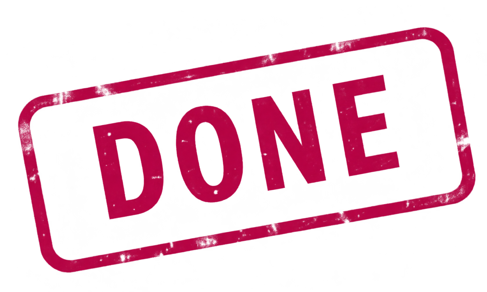 |
| No. 002 | Store category, colour, levels, season | Omar, Nada | |
| No. 003 | Edit and delete a piece | Aya | |
| No. 004 | Filter by season, warmth, formality, comfort | Malk | |
| No. 005 | Fill in the details on the phone | Marwan |
13 BACKLOG ITEMS, S1-01 TO S1-13: REPORT TABLE 3 AND JIRA
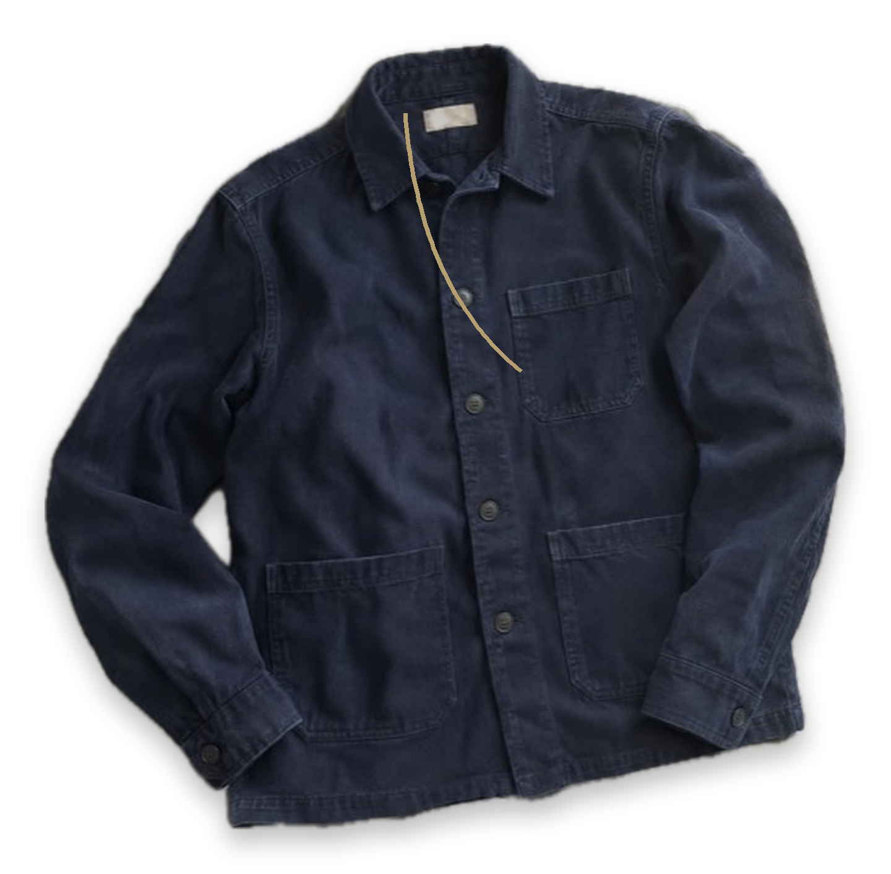
Who took each line of the order
TEAM 2 CSCE 3701 SPRINT 1
- ClothingItem model and its rules
- Core contracts, event bus, WardrobeManager
- Storage, wardrobe grid, category and colour filters
- CI on GitHub Actions
a868b5d, 813f121
- Built the ClothingItem model and the wardrobe grid with Omar
Pair work under Omar's commits
- Edit an item with its saved answers
- Delete with a confirmation
- The menu on the item page
9ca70f0, 59d77b4
- Filter by season
- Low, medium or high warmth, formality and comfort
- Filter sheet and removable chips
Jira: Implement filtering based on attributes
- Microkernel architecture revision
- Camera and library capture, permissions
- Cut-out and suggestions on the phone
- The claim-ticket design, tests, documents
PR #1, PR #2
No. 001 Add a piece
FR-01 NFR-07 MARWAN
PICKED UP
PICKUP SLIP No. 001
The app explains why it needs the camera before iOS asks. If the camera is off, the sheet offers the library and Settings, so nobody gets stuck.
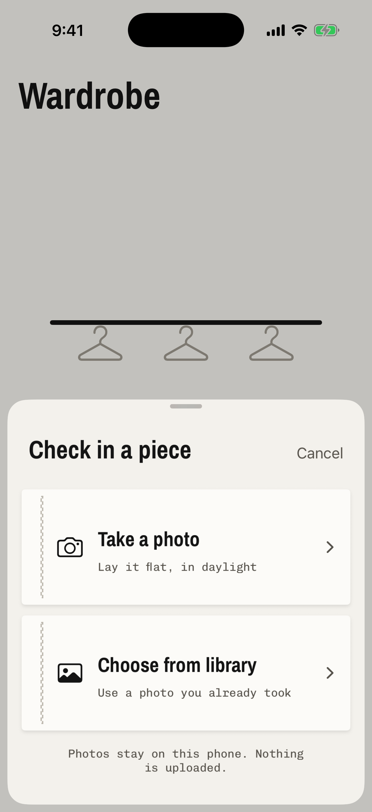
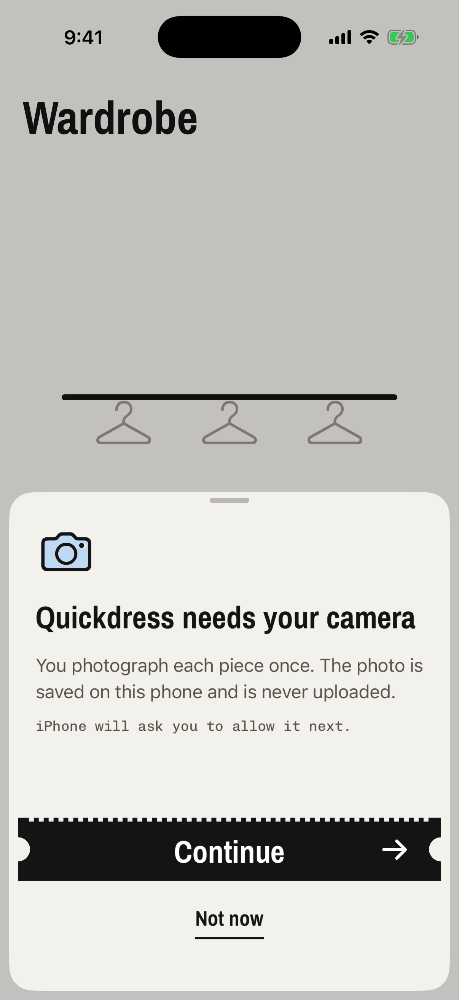
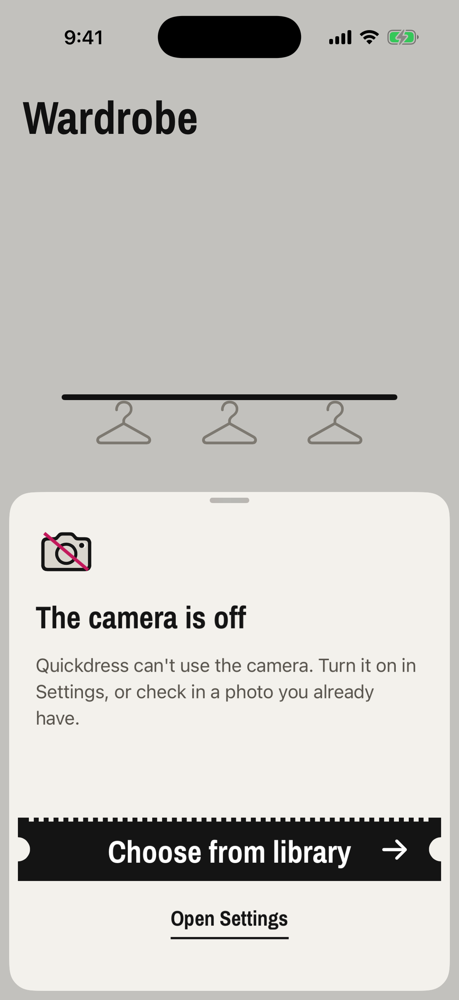
No. 005 Filled in on the phone
FR-02 FR-13 FR-17 MARWAN
PICKED UP
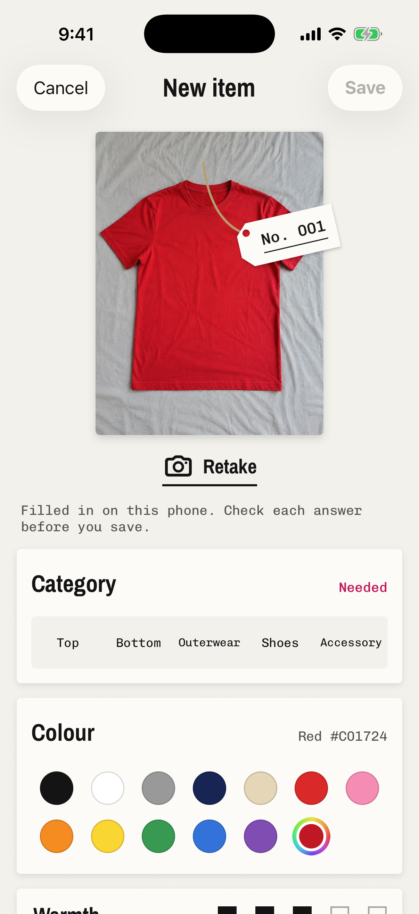
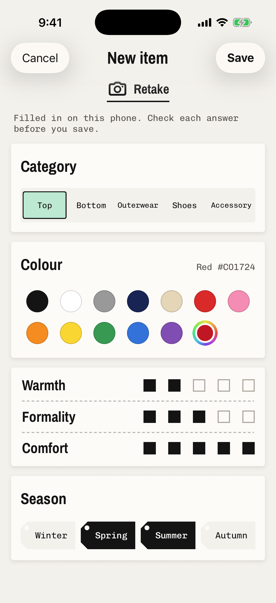
HOW IT WORKS, WITH NO API
Every answer is marked as a suggestion and can be changed. The screen says so: Filled in on this phone. Check each answer before you save.
The Simulator can't run Vision, so these screens show the full photo and only the colour. On a Mac, the same code cut out all nine test photos (next sheet).
The cut-out, on nine garment photos
TC-16 1 REAL PHOTO, 8 GENERATED, RUN ON A MAC
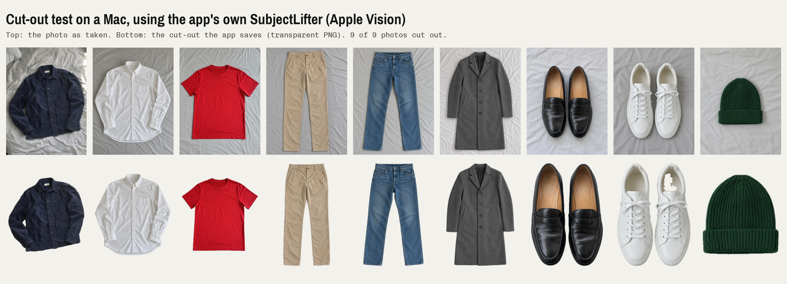
The white sneakers lost part of their white lining with the light background. Light pieces cut out best on a darker surface, and the user can keep the original photo.
No. 002 Store it, browse it
FR-02 FR-04 OMAR, NADA
PICKED UP
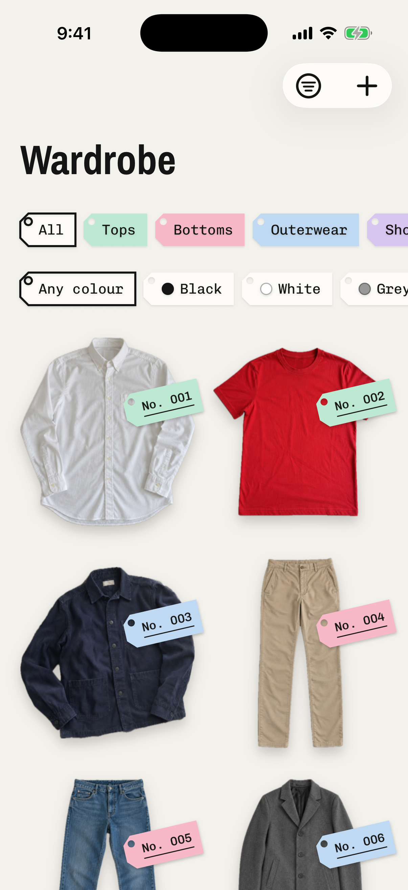
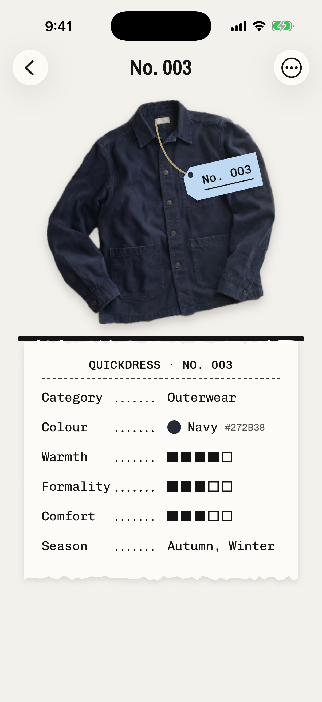
WHAT EACH PIECE KEEPS
Saved with SwiftData, photos as files on the phone. The grid filters by category and colour with tag-shaped chips; tap a piece for its receipt.
No. 003 Edit and delete
FR-03 AYA
PICKED UP
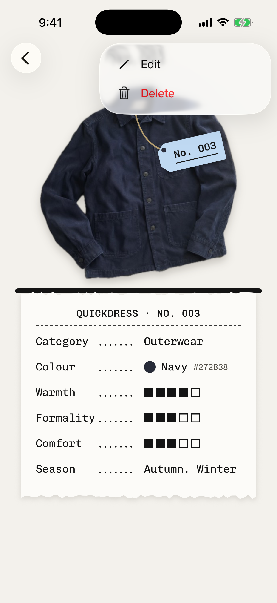
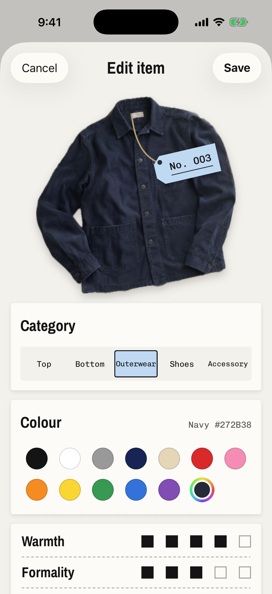
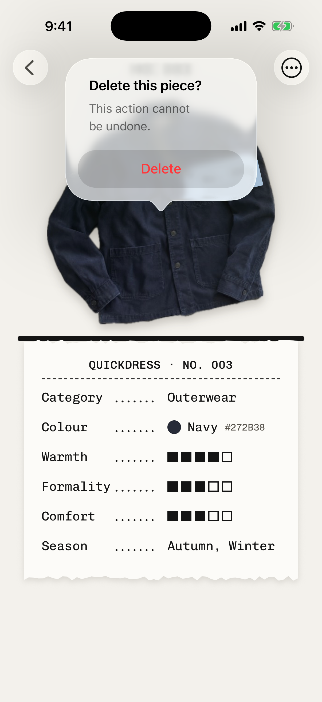
PICKUP SLIP No. 003
The edit shows on the item page as soon as it is saved. The first push broke the build on main; pull request #2 fixed it and was merged after CI passed.
No. 004 Filter by what it's for
FR-04 MALK
PICKED UP
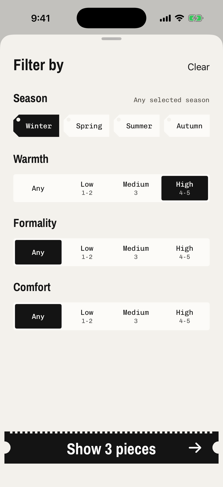
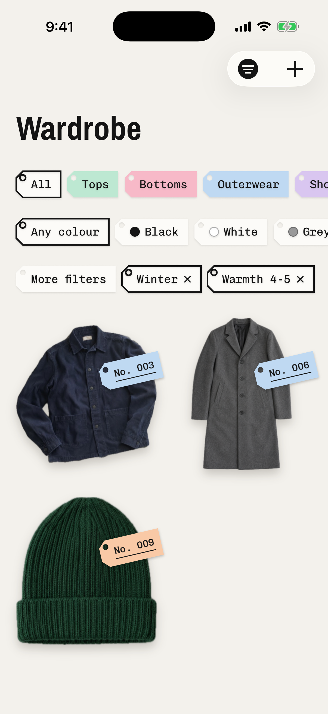
PICKUP SLIP No. 004
In the demo wardrobe of nine photographed garments, winter and high warmth leaves three: the overshirt, the coat and the beanie. The UI test TC-04 uses its own colour-square test wardrobe, where it leaves one.
What changed in the workshop
COMPONENT DIAGRAM, SPRINT 1 PART FULL: DESIGN SPEC 7.1
Lower-level design: adding a piece
SEQUENCE DIAGRAM FULL: DESIGN SPEC 7.4
Lower-level design: the code as built
CLASS DIAGRAM, MAIN TYPES FULL: DESIGN SPEC 7.5
- category, colour, exactColour
- warmth, formality, comfort
- seasons, suggested
- start()
- apply(suggestion)
- save() -> Bool
- items
- filter
- load()
- photo(for: item)
- category, colour
- seasons
- levels: Level -> LevelBand
- matches(item) -> Bool
- apply(to: items)
- id, number, photo
- category, colour, exactColour
- warmth, formality, comfort
- seasons
- validate()
- fetchItems()
- save(item)
- delete(item)
- items, photos, bus
- addItem(item, photo)
- update(item)
- delete(item)
- nextNumber()
- savePhoto(data) -> ref
- loadPhoto(ref)
- deletePhoto(ref)
- title, access
- requestAccess()
- capture() -> Data
Dashed arrows: depends on. Below a protocol: the plug-in that realises it.
How every piece was inspected
TESTING METHOD
| LEVEL | WHAT IT CHECKS | TOOL |
|---|---|---|
| Unit, white box | Each package alone, with in-memory stores that can be told to fail a save; the screens' view models with no screen | XCTest, swift test |
| Black box rules | Boundary values on the 1 to 5 ratings (0, 1, 5, 6) and band edges (2 and 3, 3 and 4); equivalence partitions for seasons | XCTest |
| End to end | The real screens: add, cancel, edit then delete, filter. A test launch mode swaps in an in-memory wardrobe and a test photo source | XCUITest |
| Manual system | Permission alerts, the real photo picker, relaunch, large text, the cut-out on real photos | Simulator, Mac |
| Every change | All package tests, the app build and the app's unit tests on every push and pull request | GitHub Actions |
The inspection receipt
TEST RESULTS 7 NOV 2026
AUTOMATED TESTS
MANUAL CASES TC-16 TO TC-22
DEFECTS FOUND AND FIXED
Notes from the counter
SPRINT RETROSPECTIVE
WENT WELL
- FR-01 to FR-04 work end to end, and FR-13 and FR-17 arrived early
- The core only imports Foundation, so its rules test in milliseconds
- Cut-out and suggestions on the phone, with no API key
- Testing caught three real defects before the demo
TO IMPROVE
- Build before pushing, and never push to main directly
- A branch and a reviewed pull request for every change
- The Simulator has no Vision; we need a signed team iPhone
- Agree the look before building screens
NEXT SPRINT
- Branch protection: CI and one review before merging
- The plug-in registry, with tests
- FR-05 to FR-08: the daily outfit and the weather
- Real-iPhone tests, force-quit test, dark mode
The paperwork, updated
REQUIREMENTS AND DESIGN, REVISION 2
REQUIREMENTS SPECIFICATION
DESIGN SPECIFICATION
Each document opens with a change log of every revision. In the body, yellow rows and paragraphs marked Changed in rev. 2 are the changes, so nothing needs a side-by-side comparison. Revisions 0 and 1 stay in the repository.
Quickdress Sprint 2
ORDER No. 002 OPEN
| ITEM | STORY | REQ. | STATUS |
|---|---|---|---|
| No. 006 | Plug-in registry, with its tests | NFR-08 | |
| No. 007 | One complete outfit a day, on Today | FR-05 | |
| No. 008 | Swap one piece, or a new outfit | FR-06, FR-07 | |
| No. 009 | The day's forecast sets warmth and coat | FR-08 | |
| No. 010 | Cut-out and suggestions on a real iPhone | FR-13, FR-17 |
Questions?